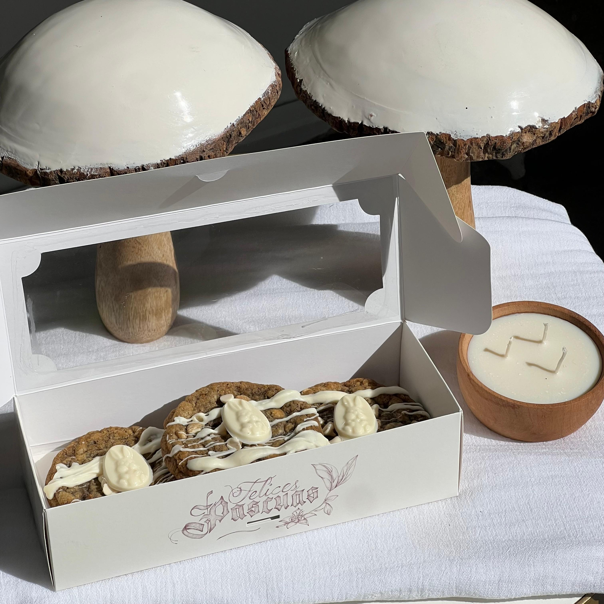
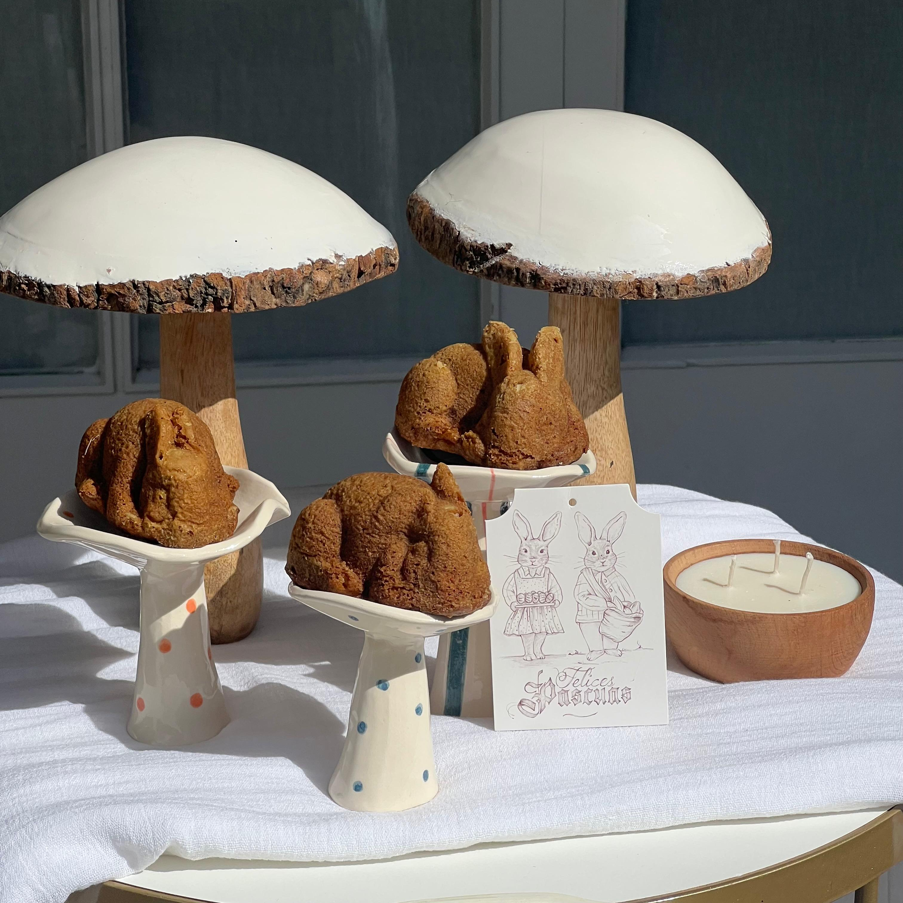

Bienvenidos a Jota Budín
En Jota Budín, cada budín es una obra maestra artesanal, elaborada con ingredientes frescos y mucho amor. Descubre nuestros sabores únicos y déjate tentar por la dulzura casera que solo nosotros podemos ofrecerte. ¡Síguenos en Instagram para no perderte ninguna delicia!
Visitá la Tienda